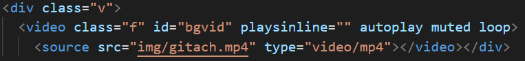

设计报告
通信一班 631807030126 陶方浩
设计目标
使用MDB框架构建一个静态网站。页面共7个，其中包括1个主页面，5个子页面，以及最后一个页面放置结业报告的超链接。网站部署到github。
设计内容
本次网页设计，我选择介绍我所喜爱的日本动漫《火影忍者》里的一个组织——晓。 其中，主页面中除了导航条的设计外，包括六个部分，分别是简介、首领、组织成员、关键人物、图集和尾声。在这六方面中， 首领模块包括一个详细介绍的子页面，关键人物模块包括三个人物介绍子页面，尾声模块有一个音频鉴赏子页面和实验报告页面。
开发过程
1.首先是主页面的设计导航条设计上，我在MDB官网导航条模板中选了一个，将其替换。
导航条中可以快速滑动到目标点，采用的标签为 < nav >, 通过在头部引用的bootstrap的css类，我们可以利用 < li >里的item类。
为导航条里设置上超链接，从而实现主页面内容定位的功能。把模板中的文字部分和图片换成自己需要的即可。
2.其次是主页面的主体部分，这里我采用棋歌教学网中的模板三，未进行结构上的改动，仅将具体模块换了位置，并做了一些简单修改。
如插入新的图片和按钮，其中按钮的位置我选择使用定义不同的样式，分别有relative和absolute的位置属性来确定按钮的位置。
3.最后是子页面的设计，四个子页面的设计大同小异，都是在主页面的架构上，取其部分，然后加入适当文字和图片说明即可。
为了使子页面更加简洁，我舍弃了导航条的设计并将其完全删除，这使得子页面十分纯粹，但同时也暴露一些问题，
如子页面无法实现通过导航条进行快速定位，便捷性降低。但鉴于子页面大多内容较少，因此此方面影响不大。
还有一点是子页面缺少与主页面的联动，若保留导航条可在其上添加返回主页面的按钮，增强主子页面之间的连接感。
这一点可以通过在子页面中单独添加超链接来弥补，但鉴于我对简洁美观的执着，便未采用。
4.值得一提的是在“宇智波鼬”这个子页面中，我添加了一个动态的视频封面，该部分并非导航条，但我将其之于第一页，在视觉上起到导航条的效果。
其实现办法是通过以下代码

遇到问题
1.首当其冲要属导航条的颜色更改，以及导航条字体颜色更改，最初时毫无头绪，在请教同学和查看教程后，
成功在class部分修改，同时也学到了更改背景颜色的方法，即在.css文件里对相应部分修改，而且可以在其上面直接进行颜色选择和透明度调整，非常方便。
2.其次就是图片的居中问题，因为对采用的模板不熟悉，其中的一些高端用法看不懂，所以当我想要调整图片的位置的时候不知道该如何操作。
最终我选择了放弃模板中的代码，自己写了一个简易的代码来处理我的图片。同时存在的问题是文本一直居中，我想让其左对齐，
而有的文本可以修改，有的则找不到地方修改，对此我采用空格填补的方法来解决这个问题（我自己发明的方法，即把每最后一行剩下的部分全部用
空格进行填充，使其长度达到一整行，这样在视觉效果里就是左对齐的文本了。）虽然这种方法没有从根本上解决问题，但至少可以解决当下的问题，属于笨蛋解法，比较麻烦。
3.最后遇到的较为棘手的问题是最后在设计主页面“尾声”的部分时，不知道该如何添加带有链接的按钮并使其处在我所希望的位置。
其实这个问题出现的原因在于我没有好好阅读教程，以及当时迫于截止时间，内心焦急，不能静下心来仔细的思考这个问题。因此当时浪费了很多时间，
在我冷静下来，好好阅读教程，并补充学习了菜鸟教程后，通过在.css文件中定义一个位置标签，采用relative和absolute的位置属性，添加到按钮部分的代码即可。
未解决问题
1.还是按钮的位置问题，主页面中共三个按钮，包括“佩恩六道”，和尾声中的“音频鉴赏”“设计报告”两个。
起初我全部使用absolute属性，但后来发现尾声中的两个按钮出现了随着网页移动的现象，我百思不得其解，查阅资料也没有找到原因，
最终我尝试性的使用了relative属性，问题就解决了。但是按照absolute属性的定义，该位置应该是一个绝对的位置，不应出现乱动的现象。
我猜测是因为我对这些位置属性的概念理解有所偏差，误解了他们真正的含义，导致我无法想通，希望以后我可以在进一步的学习中弄懂其原理。
2.其实在音频鉴赏页面中，我最初的想法是设计一个视频鉴赏的部分。我计划将视频网站中视频的引用链接直接放到代码里，
这样在页面中会出现该视频的最低画质的播放，可以在网页直接观看，如果想要调高画质会跳到视频网站。
但是！当我把链接放到代码中后，界面显示视频丢失或删除，无法加载成功。至于为什么出现这种情况，我至今没有头绪，
因为同样的操作方式，其他两位同学中，一位出现了和我一样的现象，另一位则是可以加载出来，得到想要的结果。因此，对于这个问题我还是一头雾水。
总结
首先，经过一整个学习的WEB学习，我从一个对网页制作一无所知的小白进化成了可以简单制作网页的入门选手，虽然是根据已有
模板进行改进，但是通过两次作业和结课设计的完成过程，我对CSS和HTML有了最基础的认识，了解了网页制作的基本原理。
可以说，我已经掌握了一项技能，就是制作网页，但是可以进步的空间和需要学习的内容还很多。
详细一点描述，我了解掌握了html的各种标签和css进行页面的美化和调整。掌握了加入超链接，图片，制作图片形式的url，制作导航条，进行部分网页布局，页尾，能够使用css对网页进行美化，
最后还学会了将网页托管到Github上，使其真正的成为一个“网页”。
总之，这门课对于我来说可以算是受益匪浅，并且是一门真正引起我兴趣的课程。
并且在遇到问题和解决问题的过程中，我积累到了很多网页设计的经验，相信通过这些经验，能为我以后更深入的学习打下基础并在其他学习方面提供参考。